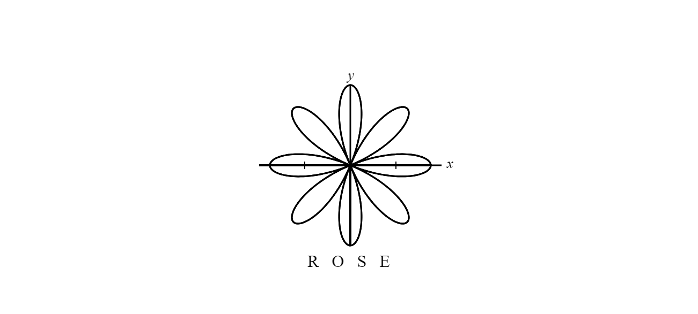
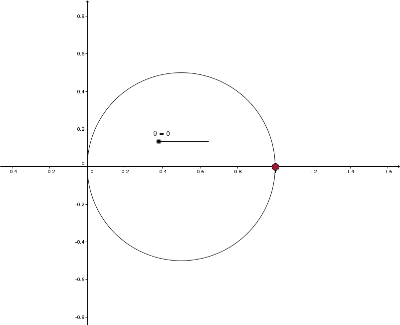
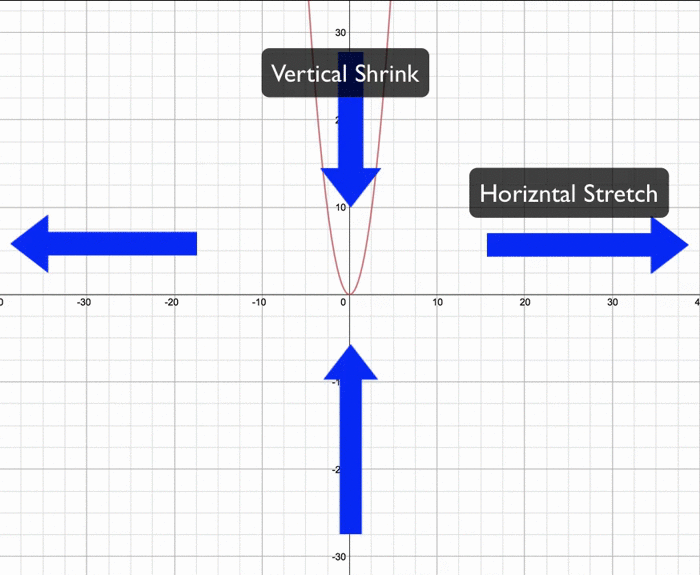

The Rose Curve

The Math
Before, we talked about how the cosine function represents the horizontal component of a right triangle in the unit circle.

The shape will be an offset circle on the polar grid. This makes sense, since cos(θ) will be negative once it reaches an angle input of π/2 until 3π/2, so whenever the input angle points left of the origin, the radius will be negative, thus making it point right.

But how do we make multiple petals? It’s rather easy: remember radial scaling from the cardioid lesson? Me neither, we’re gonna go through it again. So, as you radially scale something up, you change its number of revolutions in the polar grid. Since most trigonometric identities occur within a cycle of 0 to 2π, that is how the polar grid is constructed. But if you add some coefficient, lets say n, > 1 to the input, then you allow more revolutions within the domain of [0, 2π]. An analogy can be drawn between this and horizontal stretching/shrinking, which is usually covered in middle school/early high school.

So if we radial scale the cosine function up, then we get more petal curves smushed into the grid. For this we’ll say that the formula we’re dealing with here is r = cos(nθ), n representing the coefficient of scaling. If n is an integer ≥ 1, we get rose-petal curve with n or 2npetals.
But wait, why do we get n petals where n is odd and 2n petals where n is even? Well, when you look at range of values for n continuously, you will see a pattern forming in which a regular rose-curve will not appear as a short piece of wire, but rather a stacked mesh that can be deformed. These mesh-like formations come from when we have a non-integer radial scaling factor.

I try to reason this by thinking of fractional scaling as causing a fractional/incomplete revolution and the curve is in transition from one integer to the next. All we need to do to make this rotation complete is to multiply n by some coefficient (c) such that c * n equals an integer. For instance, if we allow a curve with n = 7/3 to keep revolving its wire mesh c = 3 times, then we will get an n = 3 * 7/3 = 7 curve.
Other Stuff
The rose-petal is quite a broad idea, and I think attributing applications to it would be a stretch and ruin its beauty. But there is one other way to visualize the curve, and that’s through gears of differing diameters and teeth numbers.


Just admire how pretty that is.